QE-CAIMD 开发与验证进度报告
mainaf7ebfc757c32e0b4f050ed9f2208e01020b2ee3"Support Nose thermostat with active CAIMD"（2026-07-22）
a11913ac6cd37f39cf31056e8e4823ec7a5de49c"Original QE 7.5 source baseline"（2026-07-15）
REPORT_METADATA.json）主状态陈述：CAIMD V1 的受控应变投影、速度基底转换、短程回归和 GPU/MPI 运行路径已经实现并通过验证；但长时间 Nose 控温尚未通过，当前仍不能将 thermostat-compatible CAIMD 视为生产级科学验证完成。
2执行摘要 Executive Summary
✅ 已经工作的部分
- CAIMD 输入接口（
caimd、caimd_stride、caimd_step_strain(6)、caimd_mask(6)）、事件调度与拒绝路径全部实现并通过 harness 验证（16 / 29 / 34 / 40 例矩阵，零意外失败）。 - 掩码应变投影达到机器精度：即使在后来失稳的 0.30 大应变轨迹中，
nominal_xx − actual_xx最大偏差也仅 2.26e-16。 - 物理笛卡尔速度在投影事件处数值连续：变换残差 ≤ 1.64e-14（含失败轨迹），正常轨迹 ≤ 1e-19 量级。
- 禁用 / 全假掩码 no-op 与 pristine 基线在短程结构化对比中逐位一致（能量、力、应力、胞、轨迹、MD 历史）。
- Leonardo A100 GPU/MPI 构建与运行路径验证完成（34 例 + 40 例矩阵；MPI 单写者
.caimd；98% GPU 利用率的 active 案例）。
❌ 尚未工作的部分
- 长时间
vc-md + Nose温度控制：所有 ≥0.05 ps 量级的 Diamond8 轨迹都升温至数千 K，远离 300 K 目标。 - 普通、无 CAIMD 的 af7ebfc 也升温（本地 Control A 与 Leonardo 作业 50127909），因此这不是（或不仅是）active CAIMD 投影的问题。
- 官方 QE 7.4.1 对照因
unknown ion_temperature nose输入解析失败，未提供任何热浴基线。 - pristine QE 7.5 的同输入行为尚未测试 —— 这是当前最关键的缺失对照。
vcinit是否真正消费输入ATOMIC_VELOCITIES未被直接证明；native restart 不支持。
当前失败是否由 active CAIMD 引起？——最强证据说明不需要 active CAIMD 即可复现升温：（1）four-DOF Test2 在全部六个胞分量都被约束时仍升温至 ~9658 K；（2）本地 Control A（caimd 关键字完全不出现）升温至 ~8048 K；（3）Leonardo af7ebfc 普通输入 1000 步升温至 ~8124 K，且升温（0.05 ps 越过 600 K）远早于任何显著胞变形（终态体积仅 +0.30%）。但在 pristine QE 7.5 对照完成之前，不能断言 CAIMD 修改与该问题完全无关，也不能断言这是 QE 上游 bug 或 fnosep 参数问题。
下一个决定性测试：pristine（未修改）QE 7.5 与 af7ebfc 使用完全相同的普通非 CAIMD 输入对照（详见 §15 优先级 1）。
状态矩阵
| 能力项 | 状态 | 关键证据（详见 §9 / §10 / §16） |
|---|---|---|
| 输入接口 input interface | PASS | harness 16/29/34/40 例；解析、广播、拒绝路径覆盖 |
| 应变事件调度 strain event scheduling | PASS | stride-2 事件序列 T,F,T,F,…，事件计数精确 |
| 掩码应变投影 masked strain projection | PASS | |nominal−actual| ≤ 2.26e-16（含失败轨迹） |
| 未掩码 PR 响应 unmasked PR response | PARTIAL | 短程正确；高速率大应变下演化至奇异胞（§10.1） |
| 反对称胞运动抑制 antisymmetric suppression | PASS | max ‖W‖F = 3.80e-08（Leonardo GPU 两进程） |
| 物理笛卡尔速度保持 velocity preservation | PASS | 残差 ≤ 1.64e-14（失败轨迹）/ ≤ 1.5e-19（正常） |
| 禁用 / 全假掩码 no-op | PASS | 与 pristine 基线逐位一致（短程结构化对比） |
| 重启 restart | NOT IMPLEMENTED | V1 显式拒绝；需持久化 CAIMD + Nose 状态 |
| thermostat 输入路径 thermostat input path | PASS | not_controlled / nose 白名单；其余显式拒绝 |
| 短程 active CAIMD + Nose 运行 | PASS | 本地定向 CAIMD+Nose harness 通过（短 smoke） |
| 长时间温度稳定性 long-time stability | FAIL | 普通基线即升温至 ~8000 K（Control A / Leonardo 50127909） |
| 生产就绪 production readiness | FAIL | NOT READY：基线与延拓语义未解决（§14） |
3科学动机 Scientific Motivation
普通 Parrinello–Rahman（PR）vc-md 允许模拟胞在内应力与外压驱动下自由弛豫：胞的九个自由度都由 PR 运动方程演化。而定量的加载 / 变形协议需要相反的能力——选定的应变分量必须跟随外部施加的时间表（例如以固定应变率单轴压缩 xx），同时：
- 其余未指定的应变分量保留普通 PR 响应（例如横向法向分量按泊松效应自由弛豫）；
- 离子受力与 DFT 应力张量仍然是普通 QE 量——CAIMD 不修改
forces.f90/stress.f90/pwcom.f90； - CAIMD 约束的是由此产生的胞运动（对 PR 候选胞做投影），而不是替换力或应力模型。
目标系综因此是：thermostatted constrained-strain Parrinello–Rahman dynamics（受热浴控制的约束应变 PR 动力学）。它不是无约束完整 NpT：被掩码的应变分量由外部时间表驱动做功，系统处于驱动非平衡协议之下，只有离子子系统由 Nose-Hoover 链控温。
应用背景（见 examples/iceX_100GPa_300K_caimd）：Ice X 在 100 GPa、300 K 下的受控拉伸 / 压缩 / 剪切响应，以及 Diamond 的有限应变率加载。
4原始 QE vc-md 架构
以下调用路径已对照 af7ebfc 源码逐一核实（文件与行号见图 1 底注）：
PW/src/run_pwscf.f90：每个离子步完成电子自洽，调用力与应力计算；XML step 输出发生在move_ions之前。PW/src/move_ions.f90（基线未修改）：calculation='vc-md'+cell_dynamics='pr'被input.f90映射为calc='cd'，分派到vcsmd。固定胞 Langevin 分支（calc(1:1)=='l'）与vc-md无关。PW/src/vcsmd.f90：把 PW 笛卡尔位置 / 力转换为晶格坐标，桥接 PR 状态与 MD 历史文件tmp_dir/prefix.md。- 第 1 个离子步走
PW/src/vcsubs.f90:vcinit（含自有的速度生成路径，见 §12）；之后各步走vcsubs.f90:vcmove（Beeman 预测-校正 PR 积分器）。 - 每步结束提交原子与胞历史：
.md（积分器状态）、.cel/.pos/.vel/.for（轨迹）、.e/.eal/.ave/.p/.tv（能量 / 温度诊断）。
关键状态变量（vcsubs.f90 内部约定）
| 变量 | 含义 |
|---|---|
rat | 晶格（分数）坐标下的原子位置 |
rati | 上一步原子位置（Beeman 历史） |
ratd | 晶格坐标下的原子速度类历史；物理笛卡尔速度 = avec · ratd |
rat2d / rat2di | 当前 / 上一步晶格坐标加速度历史 |
avec | 物理胞矩阵（bohr；列为晶格矢量） |
aveci | 上一步胞矩阵 |
avecd | PR 胞速度 |
avec2d / avec2di | 当前 / 上一步 PR 胞加速度 |
要点：MD 历史是物理积分器状态的一部分。Beeman 更新同时使用当前与上一步的加速度，且 PR 度规耦合把胞速度 / 加速度历史直接注入原子加速度更新。因此任何对返回胞矩阵的"仅投影"都不完整——投影必须一致地作用于全部历史（这正是 CAIMD V1 的做法，§5）。也因此，仅凭输入卡片无法构造精确延拓（§12）。
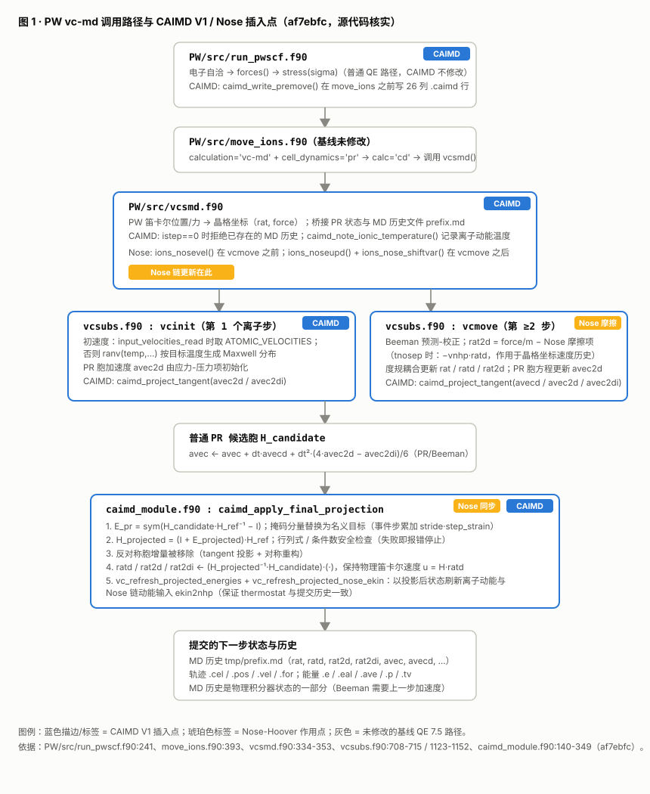
move_ions → vcsmd → vcinit（首步）或 vcmove（后续步）→ 普通 PR 候选胞 → CAIMD 投影 → 变换后的原子 / 胞历史 → 提交下一状态。琥珀色标注 Nose-Hoover 的三个作用位置：ions_nosevel（vcmove 前）、vcmove 内摩擦项（作用于 ratd）、ions_noseupd（vcmove 后），以及 CAIMD 投影后的 ekin2nhp 刷新。
来源：手绘 SVG，内容对照 af7ebfc 源码核实（行号见图内底注）。5CAIMD 设计与实现
输入接口（&CELL namelist，已在源码中核实）
| 变量 | 类型 / 默认值 | 语义 |
|---|---|---|
caimd | LOGICAL，默认 .FALSE. | 总开关；.FALSE. 时必须是精确 no-op |
caimd_stride | INTEGER，默认 1，必须 > 0 | 事件间隔：每 stride 个离子步施加一次应变事件 |
caimd_step_strain(6) | REAL(DP)，默认 0.0 | 每步名义应变增量（事件增量 = stride × step_strain） |
caimd_mask(6) | LOGICAL，默认 .FALSE. | .TRUE. 分量受控 / 保持；.FALSE. 分量保留 PR 响应 |
- 分量顺序：
(xx, yy, zz, yz, xz, xy)。 - 剪切约定：非对角分量为张量剪切；工程剪切 = 2 × 张量剪切（
.caimd文件头亦有声明）。 - 事件时间表：事件步满足
MOD(istep−1, caimd_stride) == 0——第一事件约定：第 1 个离子移动即为事件。 - strain-and-hold：非事件步掩码分量被保持在当前累计名义值；未掩码分量每步都取 PR 候选响应。
- 累计目标：掩码目标相对运行开始记录的参考胞
H_ref累计（H_new = (I + E_new)·H_ref），避免逐步(I+δE)连乘漂移。 - 安全检查：每事件增量硬限制
|stride·step_strain| ≤ 1.0e-2；投影胞行列式下限与条件数上限检查，失败即显式报错停止（0.30 轨迹正是这样终止的，§10.1）。
数学描述
F = H_candidate · H_ref⁻¹ # 相对参考胞的变形梯度
E_pr = ½ (F + Fᵀ) − I # 对称小应变；反对称部分 W 被丢弃（抑制胞转动）
target(i) += stride · step_strain(i) # 仅事件步、仅掩码分量
E_proj(i) = mask(i) ? target(i) : E_pr(i) # 掩码分量受控，未掩码分量保留 PR 响应
H_projected = (I + E_proj) · H_ref # 重构投影胞（安全检查后提交）
T = H_projected⁻¹ · H_candidate # 速度基底变换
ratd, rat2d, rat2di ← T · (·) # 保持物理笛卡尔速度 u = H·ratd 与分数位置
avecd, avec2d, avec2di ← 掩码分量置零的对称 tangent 投影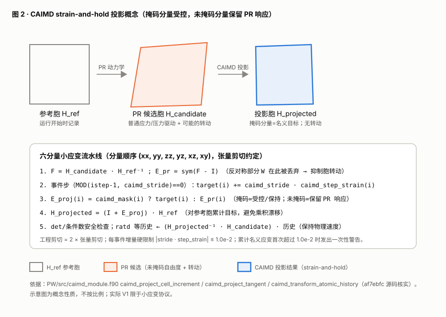
caimd_module.f90 核实。事实 / 设计选择 / 局限的区分
实现事实（源码核实）
- 投影插入点在
vcsubs.f90PR/Beeman 路径内（vcinit383-385 行、vcmove735-737 / 857-870 / 1123-1152 行）。 - 力与应力计算完全未修改（
forces.f90、stress.f90、pwcom.f90与基线相同；git diff证实）。 .caimd为 26 列 premove 诊断流，仅 I/O rank 写出。- 压力路径不变：
press（GPa）→press_ = press / ry_kbar。
设计选择
- 小应变度量
E = sym(F−I)而非有限应变；累计目标锚定参考胞。 - 反对称增量完全抑制（实验室系不转动）。
- 保持物理笛卡尔速度而非晶格速度不变。
- 第一事件在第 1 步（而非先自由弛豫一段）。
当前局限
- V1 是小应变协议，不是有限应变本构框架；大累计应变（>1e-2）只发一次性警告。
- restart 不支持（§12）；无 XML/QEXSD 集成；无
PW/Doc用户文档。 - 固定原子坐标（
if_pos≠1）与 active CAIMD 组合被显式拒绝。 - CP 不实现 CAIMD；CP 输入中
caimd=.true.显式报错。
6Thermostat 集成
THERMOSTAT_CAIMD_AUDIT.md 的源码审计结论（已对照 af7ebfc 源码复核）：
- PW
vc-md不使用固定胞 MD 的dynamics_module.apply_thermostat分派。move_ions.f90只在calc(1:1)=='l'（固定胞 Langevin）时走langevin_md；vc-md/PR 永远进入vcsmd。 - Nose 是唯一在真实
vcsmd/vcsubs调用图中显式集成的持续热浴：input.f90置tnosep=.true.；vcsmd在vcmove前调ions_nosevel、后调ions_noseupd；vcmove内摩擦项rat2d ← rat2d − vnhp·ratd作用于离子速度历史（vcsubs.f90:708-715）。 - 其他
ion_temperature关键字不是真实的vc-md路径：berendsen/svr/andersen/rescale-v/rescale-T/reduce-T只被固定胞dynamics_module消费；rescaling在vcmove中会同时重标ratd和avecd（污染 PR 胞速度）；initial只是初始化不是持续热浴；Langevin 在vc-md不可达。
白名单（PW/src/input.f90:1739-1756，源码核实）
| 输入 | active CAIMD 下的处理 |
|---|---|
ion_temperature='not_controlled'（及连字符 / 空格变体） | 允许 无离子热浴 |
ion_temperature='nose' | 允许 既有 PW vc-md Nose-Hoover 路径 |
其余全部 ion_temperature 模式 | 拒绝 errore：active CAIMD supports only ion_temperature='not_controlled' or 'nose' |
cell_temperature ≠ not_controlled | 拒绝 胞热浴不支持 |
Nose 与 CAIMD 投影的耦合（源码核实）
- Nose 作用位置：摩擦项在
vcmove内直接作用于晶格坐标离子速度历史ratd（通过rat2d更新），发生在 CAIMD 最终投影之前。 - 为什么投影必须保持物理笛卡尔速度：投影改变胞基底
H；若ratd不做H_projected⁻¹·H_candidate变换，物理速度u = H·ratd会在每个事件步发生非物理跳变，等效于对系统做隐性冲击 / 加热。 - 为什么投影后要重算离子动能：Nose 链更新消费动能
ekin2nhp。CAIMD 投影后vc_refresh_projected_energies以最终投影胞与变换后ratd重算eka/ 温度，tnosep时vc_refresh_projected_nose_ekin同步刷新ekin2nhp（vcsubs.f90:1143-1152, 1245-1278），保证热浴更新与提交的 MD 历史引用同一物理速度状态。 .caimd的temperature_K：取自最近一次完成移动的离子动能（ndof = 3(N−1) = 21），不含 PR 胞动能；首行在积分器历史建立前回退为输入目标温度。
边界声明：以上确认的是输入路径、调用图与动能同步逻辑的实现正确性，以及短程 smoke 通过。本节不声称长时间 Nose 控温已验证——事实上长时间行为当前失败（§10、§11）。
7仓库与提交时间线
本仓库共 22 个提交（2026-07-15 至 2026-07-22），全部在 main 分支；2026-07-23 的验证工作流为未跟踪目录（不产生提交）。当前 git status --short 仅含 examples/ 下的未跟踪验证工作流目录；无任何已跟踪源文件被修改。
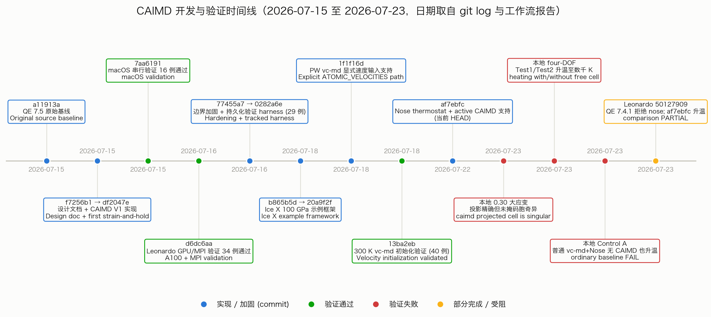
git log --date=iso-strict；2026-07-23 的四个验证事件日期取自各工作流目录时间戳与报告生成时间。
数据：assets/data/git_log.txt 与四个工作流报告；脚本 scripts/make_figures.py:fig03_timeline。完整提交列表（22 个，含完整哈希与日期）
| 短哈希 | 日期（iso-strict） | 提交主题 | 类别 |
|---|---|---|---|
a11913a | 2026-07-15T14:45:21+02:00 | Original QE 7.5 source baseline | 基线 |
f7256b1 | 2026-07-15T16:19:22+02:00 | Document CAIMD implementation design | 设计文档 |
df2047e | 2026-07-15T16:57:40+02:00 | Implement first CAIMD strain-and-hold mode | 实现 |
7aa6191 | 2026-07-15T18:06:58+02:00 | Validate CAIMD V1 on macOS | 验证 |
b53f593 | 2026-07-15T20:19:07+02:00 | Record deferred CAIMD review issues | 文档 |
d6dc6aa | 2026-07-16T11:15:26+02:00 | Validate CAIMD V1 on Leonardo GPU | 验证 |
77455a7 | 2026-07-16T13:43:46+02:00 | Harden CAIMD V1 boundary handling | 加固 |
6226488 | 2026-07-16T13:44:11+02:00 | Add persistent CAIMD software validation harness | 加固 |
09bffd3 | 2026-07-16T13:44:39+02:00 | Document repeatable CAIMD Leonardo workflow | 文档 |
0282a6e | 2026-07-16T14:05:31+02:00 | Revalidate CAIMD V1 after boundary hardening | 验证 |
b865b5d | 2026-07-18T12:09:21+02:00 | Add Ice X CAIMD example framework | 示例 |
4a62546 | 2026-07-18T12:11:42+02:00 | Allow Ice X pseudo symlink validation | 示例 |
1813ffb | 2026-07-18T12:16:20+02:00 | Fix Ice X matrix case iteration | 示例 |
04aceb3 | 2026-07-18T12:23:38+02:00 | Fix Ice X k-point convergence reference | 示例 |
20a9f2f | 2026-07-18T13:03:34+02:00 | Record Ice X CAIMD validation evidence | 示例 |
1f1f16d | 2026-07-18T16:30:37+02:00 | Support explicit velocities in PW vc-md | 实现 |
2ee4e75 | 2026-07-18T16:32:12+02:00 | Record vc-md velocity Leonardo checkpoint | 文档 |
c647143 | 2026-07-18T16:47:01+02:00 | Parse wrapped PR md histories in CAIMD harness | 加固 |
24bdc0e | 2026-07-18T17:09:28+02:00 | Use supported velocity input path in Ice X decks | 示例 |
7b5e4f0 | 2026-07-18T17:29:28+02:00 | Record Leonardo velocity validation evidence | 文档 |
13ba2eb | 2026-07-18T17:49:58+02:00 | Validate 300 K vc-md initialization | 验证 |
af7ebfc | 2026-07-22T12:51:53+02:00 | Support Nose thermostat with active CAIMD | 实现（HEAD） |
基线 → HEAD 的已跟踪源码变更（git diff --name-status a11913a..af7ebfc，节选源码部分）
M Modules/input_parameters.f90 # CAIMD &CELL 变量声明
M Modules/read_namelists.f90 # 默认值 / 校验 / 广播 / ignored-&CELL 探测 / CP 拒绝
M PW/CMakeLists.txt # 加入 caimd_module.f90
M PW/src/Makefile # 加入 caimd_module.o
A PW/src/caimd_module.f90 # 新增：CAIMD 状态 / 投影 / 诊断（498 行）
M PW/src/input.f90 # CAIMD 配置 / 边界拒绝 / thermostat 白名单
M PW/src/run_pwscf.f90 # premove .caimd 输出钩子
M PW/src/vcsmd.f90 # 历史拒绝 / Nose 桥接 / 温度诊断 / 显式速度传递
M PW/src/vcsubs.f90 # PR 积分器内投影插入点 / Nose 动能刷新
A test-suite/caimd/caimd_validation.py # 持久化验证 harness（1990 行）
# 另有文档（AGENTS.md 等 6 个 .md）与 examples/iceX_100GPa_300K_caimd/ 全套示例
# 未修改：PW/src/move_ions.f90、PW/src/forces.f90、PW/src/stress.f90、PW/src/pwcom.f908验证战役 Validation Campaigns
注：本节战役 C 使用 Ice X（48 原子）示例框架；所有长时热浴测试（D、E）使用 8 原子 Diamond8 胞。本地仓库中没有 64 原子 Diamond 工作流的证据镜像。
| 战役 | 目的 | 体系 | 可执行程序 | 关键参数 | 结果 | 解读 / 局限 | |
|---|---|---|---|---|---|---|---|
| A | 本地短程源码 / 运行时验证（macOS） | 实现正确性与 no-op 回归 | 微型 C 胞（C.UPF，ecutwfc 16 Ry） | 串行 CMake pw.x（current + baseline） | pr，dt=5，零初速，确定性对比 | PASS 16 例 → 加固后 29 例，零意外失败 | 短程、小体系 smoke；不含长时热浴 |
| B | Leonardo GPU/MPI 验证 | GPU/MPI 构建与运行路径 | 同类小胞 + SCF startup | GPU/MPI pw.x（NVHPC 24.5 + HPCX 2.19，A100，cc80） | 1–2 rank；mpiexec --oversubscribe -n 2 | PASS 34 例（b53f593）+ 29 例（09bffd3）+ 40 例（velocity, 24bdc0e） | 证明可构建可运行；仍是短程验证 |
| C | Ice X CAIMD 示例框架（预备） | 科学示例结构 / 收敛 / 速度初始化 | Ice X 100 GPa（48 原子） | Leonardo GPU/MPI pw.x | 参考 / 收敛 / pilot decks；300 K 速度卡 | PARTIAL 初始化 smoke 通过（.tv 295.86 K）；形变生产未提交 | 为生产准备的框架，尚非科学结果 |
| D | Diamond8 长时热浴测试（本地） | active CAIMD + Nose 长时行为 | Diamond8（8 原子，Γ 点，25/120 Ry） | 本地 af7ebfc pw.x（7f7f5f81…） | nose，tempw=300，fnosep=50，nhpcl=4，dt=2 fs，wmass=2e6 | FAIL 0.30 连续加载奇异终止；four-DOF Test1/Test2 升温数千 K | 见 §10.1–10.2；应变投影本身保持精确 |
| E | 普通无 CAIMD 对照 | 隔离 CAIMD 与基线热浴行为 | 同一 Diamond8 公共态（300 K 缩放速度） | 本地 af7ebfc + Leonardo af7ebfc GPU | 与 D 相同 Nose 参数；无任何 CAIMD 关键字 | FAIL Control A 升至 ~8048 K；Leonardo 50127909 升至 ~8124 K | 普通基线即失败 → 升温不需要 active CAIMD（§11） |
| F | 官方 QE 7.4.1 对比尝试 | 外部参考基线 | 同一输入（仅 prefix/outdir 不同） | Leonardo 模块 QE 7.4.1 pw.x | 同 E | BLOCKED 输入解析失败：unknown ion_temperature nose | 未提供任何热浴基线；不是热浴稳定性结果 |
9成功验证证据
- 构建成功：macOS 串行 CMake（current 与 baseline 各自成功）；Leonardo GPU/MPI CMake 构建 + 传统
configure && make pw观察构建（traditional_build_rc=0）。 - 禁用 CAIMD no-op / 全假掩码 no-op：结构化短程对比中，pristine 基线、修改版默认、显式
caimd=.false.、全假掩码四者在所有解析量上完全相等（总能量、总力范数、SCF 修正范数、总应力、打印胞 / 位置 / 体积、.ave/.avec/.e/.eal/.p/.tv、tmp/*.md；structured_regression.json）。加固期复核：.avec最大差 1.43e-101 / 4.8e-317（数值零）。 - 事件调度正确：stride-2 事件旗标序列
[T,F,T,F,T,F,T,F]，事件计数[0,1,1,2,2,3,3,4]。 - 名义-实际掩码应变精确跟踪：macOS 关闭验证
fixed_xx最大偏差 8.81e-17；0.30 失败轨迹中仍保持 ≤ 2.26e-16（本报告由原始.caimd重算证实，图 4）。 - 张量剪切约定：
shear_xy终态张量剪切 4.0e-4、工程剪切 8.0e-4（= 2×）；Leonardo 案例终态名义 xy 张量剪切 3.0e-4。 - 非正交胞处理：非正交 / 各向异性胞下掩码 xx 保持零偏差（
nonorth_max_abs_xx_strain = 0.0）。 - 胞转动抑制：反对称增量处于数值噪声：全固定零应变 max‖E‖=‖W‖=0；stride-2 两 rank GPU max ‖W‖F = 3.80e-08（skew/strain 比 1.82e-04）；shear xy max ‖W‖F = 6.76e-09。
- 速度变换残差有限且极小：正常轨迹 ≤ 1.53e-19；Leonardo 两 rank velocity smoke 3.83e-20；失败 0.30 轨迹全程 ≤ 1.64e-14（图 10）。
.caimd格式有效：26 列 schema、无重复行、温度与残差列有限；premove 应力与 stdout 一致到 4.96e-4 GPa、体积一致到 3.5e-7 bohr³。- MPI 单写者行为：多 rank 下
.caimd仅 I/O rank 写出，无交错损坏。 - 真实 A100 执行：startup SCF 观察到 GPU 活动（1184–2334 MiB 显存）；active
stride2_xx两 rank 案例峰值 GPU 利用率 98%。 - 本地与 Leonardo harness：final 34 例 / 29 例 / 40 例矩阵全部零意外失败（summary SHA256 见 §16）。
- 显式速度路径（1f1f16d）：untouched 基线显式
vc-md的 PRratd=0（证明基线忽略速度卡），修复后ratd_max_abs=2.97e-05，输入 / 初始化失配 2.71e-20；Ice X smoke 三案例.tv均 295.86 K（与 300 K 速度卡在 PR3(N+1)分母约定下一致）。
范围限定：上述短程相等性（基线 = 默认 = 显式 false = 全假掩码）只证明短轨迹、被解析量上的 no-op 性质，不能作为长时热浴稳定性的证明——长时行为在 §10 中独立失败。
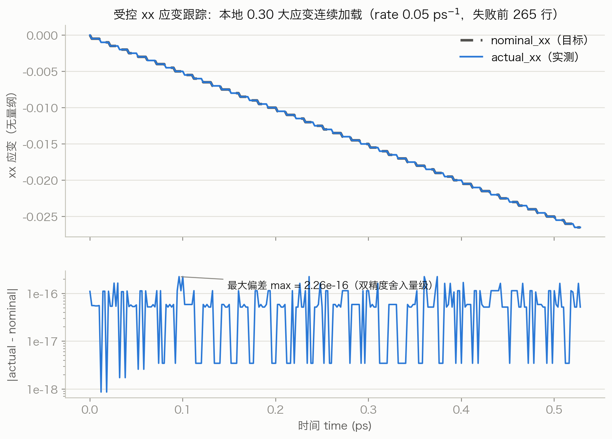
nominal_xx（目标，虚线）与 actual_xx（实测）在 265 行诊断内完全重合；下：偏差 |actual−nominal| 全程 ≤ 2.26e-16（双精度舍入量级）。注意：应变跟踪精确不证明热稳定性——同一轨迹随后因未掩码分量失稳而终止（图 9，§10.1）。
数据：assets/data/cont_0p30_diamond8_continuous.caimd（原始 26 列诊断流的逐行重算）；脚本 scripts/make_figures.py:fig04_strain_tracking。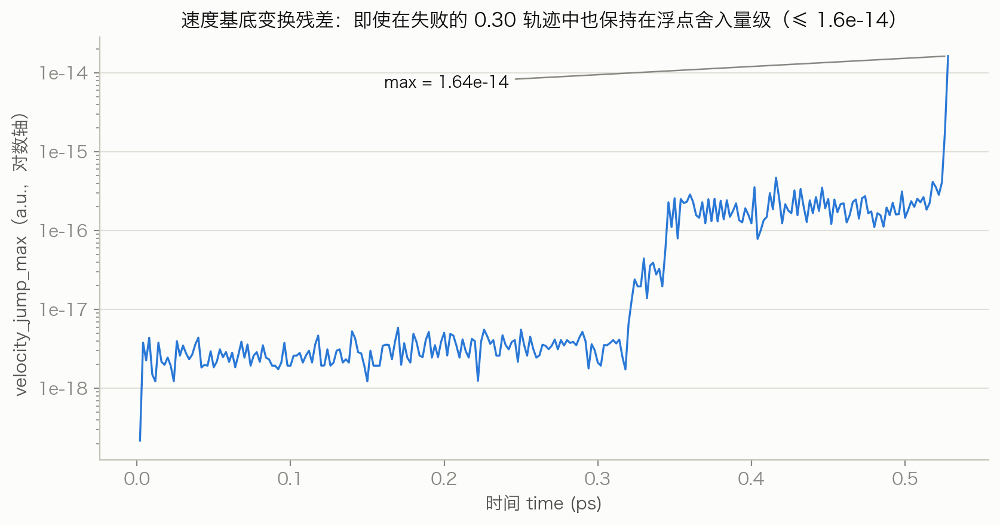
velocity_jump_max 是强制速度历史变换的浮点残差诊断（非物理速度跳变）；即使在失稳发散的 0.30 轨迹中也仅从 ~1e-19 增长到 1.64e-14，随胞条件数恶化而增大但始终处于舍入量级——证明"保持物理笛卡尔速度"的变换实现正确。
数据：同图 4；脚本 scripts/make_figures.py:fig10_velocity_jump。10失败与受阻证据
10.1 大应变 Diamond8 连续加载（本地，rate 0.05 ps⁻¹，目标 −0.30）
- 掩码 xx 投影全程精确（≤ 2.26e-16，图 4）；速度残差 ≤ 1.64e-14。
- 但未掩码胞自由度失稳：~0.37 ps 起 zz/xz/yy/yz/xy 依次越过 0.05 → 0.1 → 0.25 → 0.5，终态 |分量| 高达 1.08（图 9）；第 265 步 QE 以
Error in routine caimd_inverse3 (1): caimd projected cell is singular显式终止。 - 末行 CAIMD 温度 ~7.0e10 K、压力 ~11777 kbar、最小 C-C 距离 0.256 bohr——轨迹早已非物理。
- 解读：0.05 ps⁻¹ 的激进速率 + 大残余应力使该设置不适合用于热浴验证；这是安全检查按设计工作的例证，同时暴露未掩码 PR 分量在该参数域的失稳。升温本身在第 3 步就已出现（90978 K @ 0.004 ps），远早于胞畸变——与 §11 的基线问题一致。
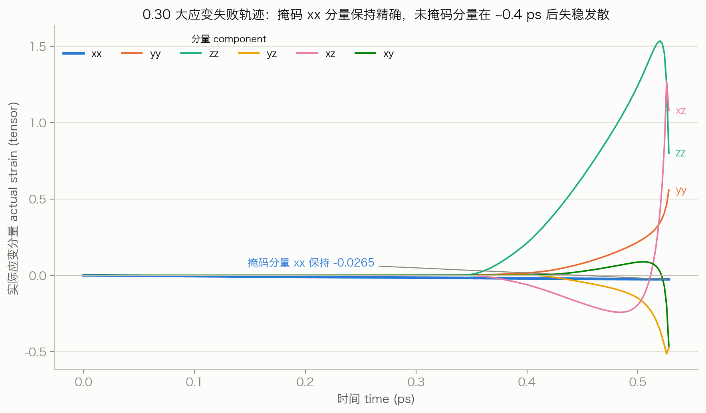
scripts/make_figures.py:fig09_unmasked_components。10.2 four-DOF 测试（本地，0.003 ps⁻¹，目标 −0.03）
| 测试 | 配置 | 完成步数 | 温度（.eal 重算） | 判定 |
|---|---|---|---|---|
| Test1 | active CAIMD 零载荷 + 完整自由 PR（mask=xx，step_strain=0） | 3576 | mean 4612.6 K，max 8503.5 K，final500 4449.3 K | FAIL |
| Test2 | 加载 xx 且全部六分量约束 | 779 | mean 4962.2 K，max 9657.8 K，final500 5246.4 K | FAIL |
| Test3 / Test4 | 横向法向自由 / 完整 PR 加载 | 未运行（被 Test1/Test2 失败阻断） | NOT RUN | |
关键推论：Test2 在没有任何自由 PR 剪切自由度的情况下仍升温至数千 K——自由 PR 剪切本身不能解释升温。（两测试初始直接速度温度为公共态的 559.1 K，未重新缩放至 300 K。）
10.3 普通 Control A（本地，CAIMD 完全禁用）
- 输入不含任何 CAIMD 关键字；公共态速度经 COM 移除 + 均匀缩放到精确 300.000 K。
- 664 步（1.328 ps）后安全停止：
.eal重算 mean 3843.9 K、max 8047.6 K、final500 4770.5 K；终态直接.md速度温度 5064.7 K，与.eal一致。 - 最早偏离观测量：
.eal离子温度于第 26 步（0.05 ps）越过 600 K。 - 因此，复现升温不需要 active CAIMD。Controls B（全假掩码）与 C（全真零载荷）因基线已失败而未运行。
10.4 Leonardo af7ebfc 普通测试（作业 50127909，无 CAIMD 关键字）
- 1000 步全部完成（
JOB DONE，返回码 0）；初始温度 300.001 K。 - 最高 8123.839 K；终态 4231.686 K（本报告由镜像
.eal原始文件重算，与既有 CSV 完全一致）。 - 首次越过 600 K：第 26 个离子步（0.05 ps）；首次越过 2000 K：第 130 个离子步（0.258 ps）。
- 终态直接
.md速度温度与.eal一致到 0.057 K（stdout/.tv使用不同温度约定，定性一致）。 - 胞保持非奇异且仅弱变形：终态体积变化 +0.302%，最大条件数 1.017（本报告由
.cel重算证实，图 6）。
10.5 官方 QE 7.4.1 对比
- 同一物理输入（仅
prefix/outdir不同）下，官方模块 QE 7.4.1 在iosys输入解析阶段失败：unknown ion_temperature nose，未产生任何 MD 轨迹。 - 因此官方 QE 7.4.1 运行不提供任何热浴基线；这是解析 / 兼容性失败，不是热浴稳定性结果。Slurm 顶层状态
COMPLETED 0:0（step 0 失败、step 1 完成），不能据此声称"对比成功"。
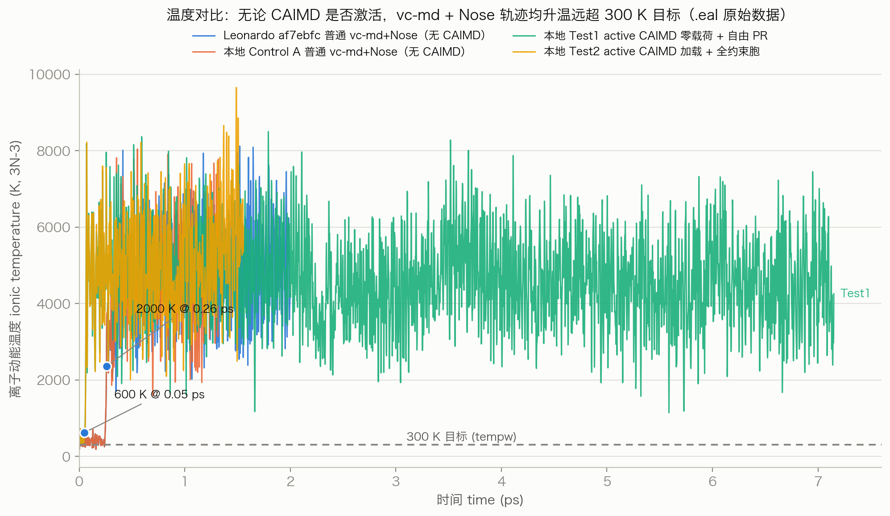
vc-md + Nose 轨迹（两条无 CAIMD、两条 active CAIMD）全部升温远超 300 K 目标（灰色虚线）；蓝点标注 Leonardo 普通轨迹首越 600 K（0.05 ps）与 2000 K（0.26 ps）。Control A 与 Leonardo 从 300 K 出发，Test1/Test2 从公共态 559 K 出发。无论 CAIMD 是否激活、胞是否被约束，升温都出现。
数据：四个 .eal 原始文件（assets/data/*.eal），T = 2·eka/(21·kB)；脚本 scripts/make_figures.py:fig05_temperature_comparison。11温度控制调查
假设的演进
- 初始假设：active CAIMD 投影或自由 PR 胞分量导致升温（因为最初的失败出现在 active CAIMD 大应变运行中）。
- 反对该简单解读的证据：
- Test2：全部胞分量被约束仍升温（排除"自由 PR 剪切"单因解释）；
- Control A：CAIMD 完全禁用仍升温（排除"active 投影必需"）；
- Leonardo 50127909：升温（0.05 ps）远早于任何显著胞变形（体积 +0.30%、条件数 ≤1.017，图 6）；
.eal与终态直接.md速度重建一致（0.057 K）——升温是物理速度中真实存在的，不是诊断量伪影。
vc-md + Nose 测试中，复现所观测到的升温不需要 active CAIMD 投影。- 不能断言 pristine QE 7.5 有相同行为（未测试——这是决定性缺失对照）；
- 不能断言问题一定由
fnosep（=50 THz）引起（参数矩阵未在等价性确立后系统测试）； - 不能断言这一定是 QE 上游 bug；
- 不能断言 CAIMD 修改与此完全无关（af7ebfc 也修改了
vcsmd/vcsubs的非 active 路径，如显式速度桥接；只有 pristine 对照能排除）。
Nose 参数整定历史（0.30 工作流平衡化尝试 01–08）
八次平衡化尝试的参数与结果（点击展开）
| 尝试 | 关键参数 | 结果 |
|---|---|---|
| 01 | wmass=2000 | 胞体积暴走至 8.2e8 bohr³，T max 8991 K → FAIL |
| 02 | dt=82.68（实为 4 fs），wmass 按比例缩放 | 仍暴走（体积 1.0e7 bohr³）；时间步与要求不符 → FAIL |
| 03 | dt=41.34（2 fs），fnosep=100，ecut 12 Ry | 胞有界但离子温控失败：每个 Nose 振荡仅 ~9 步，T mean 8897 K → FAIL |
| 04 | fnosep=10，ecut 25 Ry | 显著改善但仍偏热漂移（final200 mean 678.6 K）→ FAIL |
| 05 | fnosep=20，wmass=1.37e5 | 离子温度偏冷漂移 → FAIL |
| 06–07 | fnosep=20，wmass=2e6，500/1500 步 | 稳定但偏冷（"stable_cold"） |
| 08 | fnosep=50，nhpcl=4，wmass=2e6 | 被采用为工作参数；平衡化通过（ionic mean 251.7 K，final200 252.1 K） |
注意：这段整定史说明该参数域内 Nose 行为对 fnosep/wmass/dt 敏感，且"平衡化通过"的短窗口并不保证后续长时稳定——被采用的尝试 08 参数正是后来 Control A / Leonardo 失败时使用的参数。这是相关性观察，不构成因果证明。
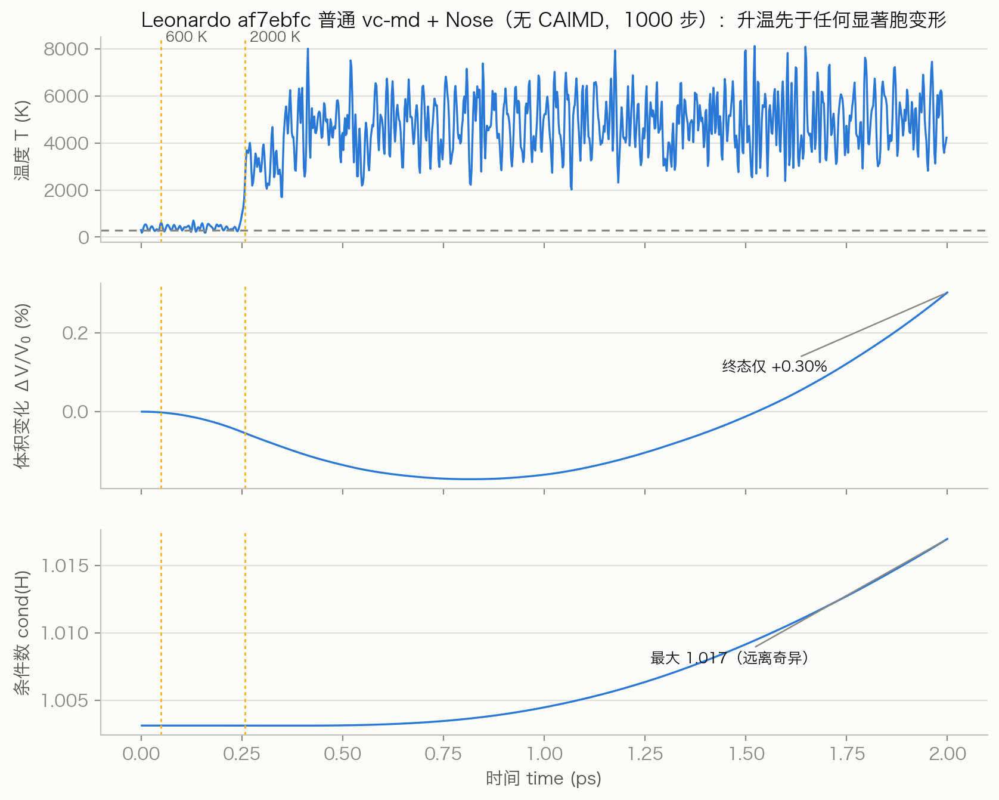
assets/data/leonardo_af7ebfc.eal（温度）与 assets/data/leonardo_af7ebfc.cel（体积 / 条件数，本报告重算）；脚本 scripts/make_figures.py:fig06_leonardo_temp_cell。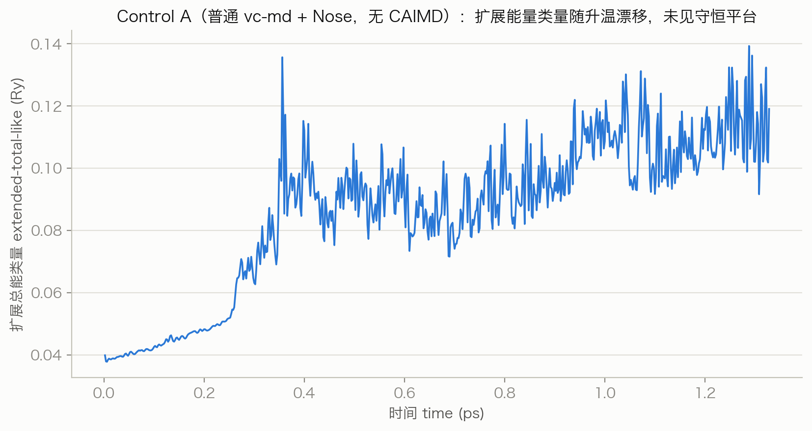
uta+eka+utl+ekla 组合，不含完整 Nose 链项）随升温从 ~0.039 Ry 漂移至 ~0.12 Ry，未出现守恒平台——与积分病理一致的现象学证据，但因缺少完整链能量项，仅作定性参考。
数据：assets/data/controls_ABC_nose_extended_energy_timeseries.csv（controls ABC 工作流分析产物）；脚本 scripts/make_figures.py:fig11_nose_extended。12初速度与延拓问题
源码观察（af7ebfc，vcsubs.f90:190-260）
- 第一
vc-md步中vcinit拥有自己的速度生成路径：仅当input_velocities_read（需要ion_velocities='from_input'+ATOMIC_VELOCITIES { a.u }卡片，且经vcsmd桥接——该桥接是 1f1f16d 引入的本仓库修改）时才消费输入速度；否则调用ranv(temp, …)按目标温度生成 Maxwell 分布。pristine QE 7.5 的vc-md总是走ranv路径。 - 因此：输入文件中存在直接温度为 300 K 的速度块，不能证明积分器消费了该速度块。
- 同样：首行
.eal温度接近 300 K 也不能证明输入速度被使用——tempw=300会使ranv生成的内部速度落在同一目标附近。
推论
- 对干净的普通 from-scratch 基线（§15 优先级 1）：省略
ATOMIC_VELOCITIES是合理的——让两个可执行程序各走原生初始化，避免把速度路径差异混入对照。 - 对声称精确的 Stage-1 → Stage-2 延拓：省略速度不可接受；且外部
restart_mode='from_scratch'延拓在证明输入速度确被消费之前，不能称为动力学精确。此外 Beeman 历史（rat2di等）与 Nose 链状态（xnhp0/xnhpm/xnhpp/vnhp）无法通过输入卡传递——外部延拓在原理上就不是精确 Nose 扩展态重启。 - native CAIMD restart 当前不支持（V1 显式拒绝
restart_mode='restart'与陈旧 MD 历史）。
- V0：不含
ATOMIC_VELOCITIES； - V1：显式速度卡；
- V2：符号反转的显式速度卡；
- 比较三者第一条提交的
.md中的ratd：若 V1 与 V2 给出反号的确定性ratd而 V0 给出随机分布，即证明消费；若三者统计相同，即证明未消费； - 对 pristine QE 7.5 与 af7ebfc 都执行。
13当前科学解读
已确认 Confirmed
- 确认CAIMD 输入接口存在且行为符合规范（多轮 harness）。
- 确认掩码应变投影工作正确（机器精度跟踪，含失败轨迹）。
- 确认短程 no-op 回归通过（与 pristine 逐位一致）。
- 确认CAIMD 事件处物理笛卡尔速度变换数值连续（残差 ≤ 1.64e-14）。
- 确认CAIMD 在 Leonardo GPU/MPI 上可构建、可运行（A100 实测活动）。
- 确认当前观测到的升温不需要 active CAIMD 即可复现（Control A、Leonardo 50127909、Test2 全约束）。
未确认 Not confirmed
- 未解决长时间稳定的 Nose 控温（当前在测参数域内全部失败）。
- 未测试pristine QE 7.5 的普通
vc-md + Nose行为（决定性缺失对照）。 - 未解决
vcinit对输入ATOMIC_VELOCITIES的精确消费（V0/V1/V2 未执行）。 - 未解决精确的外部轨迹延拓（Beeman 历史与 Nose 链状态无法经输入卡传递）。
- 未测试长时间有限应变生产行为（0.30 尝试因激进速率失效，不构成协议级测试）。
- 未解决生产就绪的 CAIMD 热力学系综（依赖以上全部）。
强支持升温是物理速度中真实存在的动力学现象（.eal、stdout、终态直接速度三源一致），并且发生在胞仍近乎刚性时（图 6）——指向离子子系统 + 热浴耦合的积分 / 参数问题域，而非胞失稳的次生效应。
可能fnosep=50 THz（2 fs 步长下每 Nose 周期 ~10 步）过于激进、或 Nose 链参数与该小体系不匹配——与整定史一致，但未被证明为原因。
14就绪度评估 Readiness Assessment
| 维度 | 评级 | 依据 |
|---|---|---|
| 源码实现成熟度 source implementation maturity | HIGH | 窄边界、显式拒绝、安全检查、审计文档齐备；deferred issues 有记录 |
| 软件回归成熟度 software regression maturity | HIGH | 持久化 harness（test-suite/caimd/caimd_validation.py）多平台多轮零意外失败 |
| 数值投影验证 numerical projection validation | HIGH | 机器精度应变跟踪与速度保持，含失败轨迹下的稳健性 |
| GPU/MPI 就绪度 GPU/MPI readiness | HIGH | A100 构建 / 运行 / 单写者 / 两 rank active 案例全通过 |
| Thermostat 就绪度 thermostat readiness | LOW | 输入路径与动能同步已实现，但长时行为失败且基线未隔离 |
| 重启就绪度 restart readiness | NONE | V1 显式不支持；精确延拓需持久化 CAIMD + Nose 状态 |
| 长时科学验证 long-time scientific validation | FAIL | 所有 ≥1 ps Diamond8 Nose 轨迹升温至数千 K（含普通基线） |
| 生产就绪 production readiness | NOT READY | 见最终判定 |
vc-md + Nose 的长时行为与初始状态延拓语义仍未解决，它尚未准备好用于生产级热浴加载模拟。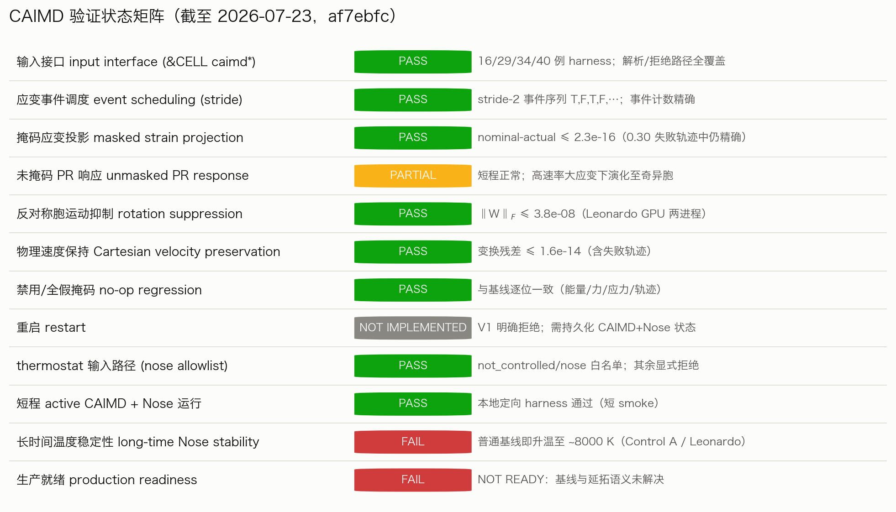
scripts/make_figures.py:fig07_status_matrix。15建议下一步（按科学优先级）
- 优先级 1 —— pristine QE 7.5 vs af7ebfc 普通对照：用完全相同的普通非 CAIMD 输入（无任何 CAIMD 关键字）分别运行未修改 QE 7.5 与 af7ebfc。首选省略
ATOMIC_VELOCITIES，让两个可执行程序都走各自原生 from-scratch 初始化。此测试单独决定问题归属：pristine 也升温 → 上游行为 / 参数域；pristine 稳定 → af7ebfc 回归，二分定位。 - 优先级 2 —— V0/V1/V2 速度消费诊断：对 pristine QE 7.5 与 af7ebfc 都执行（§12），以第一条提交
.md的ratd为判据。 - 优先级 3 —— 保守 Nose 参数矩阵（在普通 pristine/current 等价性确立之后）：降低
fnosep；缩短时间步；缩短 Nose 链（nhpcl）；可选固定胞mdvs PR 对照。不预设任何单一参数已被证明是原因。 - 优先级 4 —— 重启 CAIMD 验证阶梯（获得稳定普通 Nose 基线后）：依次重复：零载荷 active CAIMD → 全约束 3% 加载 → 横向法向自由加载 → 完整 PR 加载。
- 优先级 5 —— 延拓 / 重启方案：若需要精确轨迹延拓，设计并实现科学上显式的 continuation/restart（持久化 CAIMD 协议状态 + Nose 链变量
xnhp0/xnhpm/xnhpp/vnhp、链维度与原子映射）。
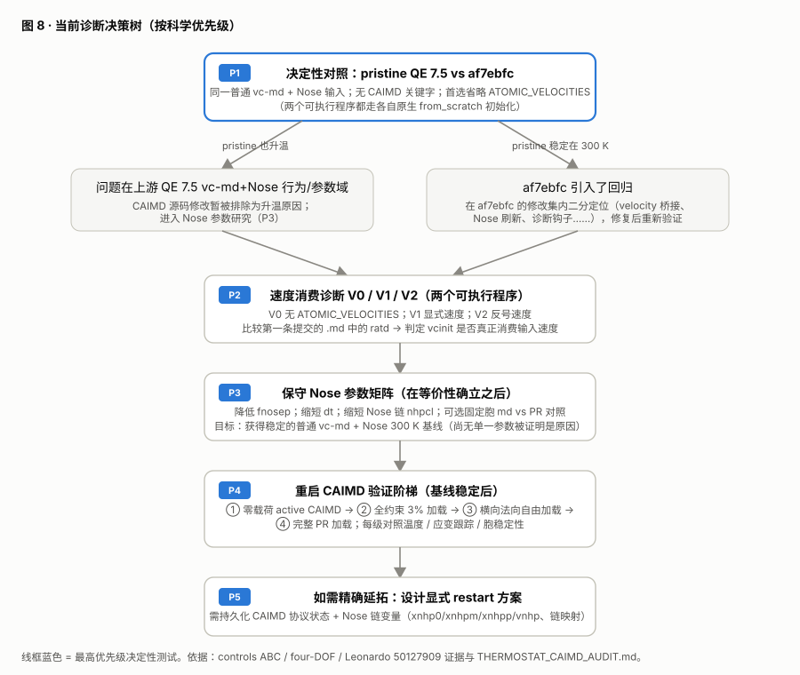
THERMOSTAT_CAIMD_AUDIT.md。16证据与溯源附录
16.1 关键数值结果（本报告重算 vs 既有记录）
| 量 | 本报告重算值 | 既有记录值 | 证据来源 |
|---|---|---|---|
| Leonardo af7ebfc 最高温度 | 8123.8388 K | 8123.839 K | leonardo_af7ebfc.eal / 审计报告 |
| Leonardo af7ebfc 终态温度 | 4231.6861 K | 4231.686 K | 同上 |
| Leonardo 首越 600 K / 2000 K | 0.05 ps / 0.258 ps | step 26 @ 0.05 ps / step 130 @ 0.258 ps | 同上（.eal 步号 0 基 / 报告 1 基，时间一致） |
| Leonardo 终态体积变化 / 最大条件数 | +0.3025% / 1.0170 | 0.302% / 1.017 | leonardo_af7ebfc.cel（本报告重算） |
| Control A mean / max / final500 | 3843.93 / 8047.60 / 4770.52 K | 3843.93 / 8047.60 / 4770.52 K | control_A.eal / controls 报告 |
| Control A 终态直接速度温度 | 5064.73 K（.eal 终行） | 5064.727 K（.md 重建） | 同上 |
| Test1 mean / max | 4612.57 / 8503.52 K | 4611.46 / 8503.58 K（.caimd 列） | test1.eal / four-DOF 报告 |
| Test2 mean / max | 4962.21 / 9657.75 K | 4954.88 / 9657.71 K（.caimd 列） | 同上（.eal 与 .caimd 温度列口径略异，均为同一现象） |
| 0.30 轨迹 xx 跟踪最大偏差 | 2.2551e-16 | ~2.26e-16 | .caimd 流 / 安全停止报告 |
| 0.30 轨迹速度残差最大值 | 1.6401e-14 | ~1.64e-14 | 同上 |
| 0.30 轨迹终态未掩码应变 | yy 0.558 / zz 0.800 / yz −0.474 / xz 1.080 / xy −0.462 | 一致 | 同上 |
完整重算输出：assets/data/recomputed_metrics.json（由 scripts/recompute_metrics.py 生成；温度约定 T = 2·eka/(21·kB,Ry)）。
16.2 工作流与可执行程序
本地验证工作流（绝对路径）
- /Users/mengqicheng/Downloads/Learning/qe-7.5/examples/caimd_diamond8_local_nose_continuation_0p30_20260723T102331Z（0.30 大应变；副本：evidence/continuation_0p30/）
- /Users/mengqicheng/Downloads/Learning/qe-7.5/examples/caimd_diamond8_local_nose_four_dof_tests_0p03_20260723T115714Z（four-DOF；副本：evidence/four_dof_0p03/）
- /Users/mengqicheng/Downloads/Learning/qe-7.5/examples/caimd_diamond8_local_nose_controls_ABC_20260723T134303Z（普通对照；副本：evidence/controls_ABC/）
- /Users/mengqicheng/Downloads/Learning/qe-7.5/examples/diamond8_ordinary_nose_qe74_vs_af7ebfc_completed_20260723T185307Z（Leonardo 完成镜像；副本：evidence/leonardo_completed/）
- /Users/mengqicheng/Downloads/Learning/qe-7.5/examples/diamond8_ordinary_nose_qe74_vs_qe75_af7ebfc_20260723T175625Z（提交侧工作流；其 FINAL_COMPARISON_REPORT.md 为 PENDING 占位，权威记录在完成镜像）
可执行程序与校验和（SHA256）
| 可执行程序 | SHA256 |
|---|---|
本地 af7ebfc pw.x（Diamond8 本地测试；/private/tmp/qe_diamond8_af7ebfc_build/bin/pw.x） | 7f7f5f815f53983c3b41dfab1570d96e8f8816d56cdcc574a3a2e33fcf492303 |
Leonardo af7ebfc GPU/MPI pw.x（作业 50127909） | 89d4fda827d2cc22a3b4c1670e90dc40ce629af42096c785b55c70c355a10e7d |
Leonardo 官方 QE 7.4.1 模块 pw.x | beb956cce572605941b791c37bc4dd30ac6cee714e18be7b93fd4ff0e47f4aca |
Leonardo baseline（a11913a）GPU/MPI pw.x | 7804c655a1ea6c157e09f402ef4064940edea08558317d1b529623fe8825d67f |
Leonardo current（b53f593 阶段）GPU/MPI pw.x | 4b316dad82d2cb18155fa62ed4957aef041355955b4a7a5687f15fe7fbcd0b35 |
Leonardo current（24bdc0e 阶段）GPU/MPI pw.x | 7cacabbef8d32aa83fa561cd124e319ced62714e0a66e2a85f2b1d99def4a6e8 |
赝势 C.UPF（所有 Diamond8 / 对照运行） | 9c06aa642d22981491b32a18ec129086fe8366164984930389e4fc071c978639 |
输入 qe74.in / qe75_af7ebfc.in（作业 50127909） | fb36b256662bc48b4486ab0f71e71e6c66324e91de590229c6cb1c8cf2ef35d6 / 33b584fc5ecccae84138d4bdce6de85872a218a8693deb2544bc80ed293ed51d |
本地镜像中发现的 Slurm 作业 ID
- 50127909：QE 7.4.1 vs af7ebfc 普通对照（COMPLETED 0:0；step .0 失败 = QE74 解析拒绝，step .1 完成 = af7ebfc 1000 步）。
- 49490363 / 49522699 / 49525164：初次 Leonardo GPU 构建 / 验证交互分配（b53f593 阶段）。
- 49542425（构建 + 旧 Python 失败）/ 49543531（Python 3.11 harness，COMPLETED，29 例）：加固阶段。
- 49723755（K_velocity 11 例 + 全矩阵 40 例，COMPLETED）/ 49725763（Ice X smoke）/ 49728066（两 rank velocity smoke）：显式速度阶段；失败尝试 49723125、49723301、49724256、49724464、49725315、49727555、49727841 均已诊断并被后续作业取代。
- 矩阵 TSV：matrix-49701674.tsv、matrix-49701713.tsv（examples/iceX_100GPa_300K_caimd/evidence/）。
主要报告 / JSON / CSV 路径（副本为相对链接，原始为绝对路径文本）
- 根文档：AGENTS.md · CAIMD_IMPLEMENTATION.md · CAIMD_V1_IMPLEMENTATION_REPORT.md · CAIMD_LEONARDO_GPU_VALIDATION_REPORT.md · THERMOSTAT_CAIMD_AUDIT.md · LEONARDO_BUILD.md
- 工作流报告副本：continuation SAFETY_STOP_REPORT.md · four-DOF FINAL_VALIDATION_REPORT.md · controls FINAL_VALIDATION_REPORT.md · Leonardo FINAL_COMPARISON_REPORT_AUDITED.md
- JSON：comparison_summary_audited.json · DIAGNOSTIC_CLASSIFICATION.json · OLD_FAILURE_DIAGNOSIS.json · test_comparison_summary.json · recomputed_metrics.json
- CSV：run_statistics.csv · controls_ABC_temperature_statistics.csv · qe75_af7ebfc_temperature.csv · nose_extended_energy_timeseries.csv
- Leonardo harness 摘要（远程路径，未镜像）：$ROOT/validation/analysis/summary.json（SHA256 03401cc1…）、$ROOT/validation/hardening-py311-49543531/analysis/summary.json（fff545a5…）、$ROOT/validation/velocity-full-49723755/analysis/summary.json（053fa00f…），其中 $ROOT = /leonardo/home/userexternal/mcheng00/software/qe-7.5-caimd-v1-7aa61919。
17源码与工作流索引
相关源文件（相对仓库根的路径，未复制入本报告目录）
- Modules/input_parameters.f90 — CAIMD
&CELL变量声明（1346–1369 行附近） - Modules/read_namelists.f90 — 默认值 / 校验 / 广播 / ignored-
&CELL探测 / CP 拒绝 - PW/src/input.f90 — CAIMD 配置（1307 行）、active 边界与 thermostat 白名单（1739–1756 行）
- PW/src/run_pwscf.f90 — premove
.caimd写出（241 行） - PW/src/move_ions.f90 —
vcsmd分派（393 行；基线未修改） - PW/src/vcsmd.f90 — PR 桥接 / Nose 调用（334–353 行）/ 历史拒绝（154 行）
- PW/src/vcsubs.f90 —
vcinit速度路径（190–260 行）、Nose 摩擦（708–715 行）、投影插入与动能刷新（1123–1278 行） - PW/src/caimd_module.f90 — CAIMD 模块全体（498 行）
- PW/src/stress.f90 · PW/src/forces.f90 · PW/src/pwcom.f90 — 普通 QE 力 / 应力路径（未修改，已验证）
- test-suite/caimd/caimd_validation.py — 持久化验证 harness
本报告目录内容（相对链接）
- 图：fig01 · fig02 · fig03 · fig04 · fig05 · fig06 · fig07 · fig08 · fig09 · fig10 · fig11
- 数据：assets/data/（原始
.eal/.cel/.caimd副本、派生 CSV、git_log.txt、recomputed_metrics.json） - 脚本：recompute_metrics.py · make_figures.py
- 证据副本：evidence/（root_docs / continuation_0p30 / four_dof_0p03 / controls_ABC / leonardo_completed）
- 元数据：REPORT_METADATA.json · README.md


本报告生成过程未修改任何已跟踪 QE 源文件、任何原始计算输出与任何既有报告；未使用 Leonardo / SSH / SCP / Slurm / 网络；未创建 Git 提交、未执行 push。所有新文件仅位于本报告目录内。
QE-CAIMD 开发与验证进度报告 · 生成于 2026-07-23（UTC，目录时间戳 20260723T205507Z）· 仓库 /Users/mengqicheng/Downloads/Learning/qe-7.5 @ af7ebfc（main）· 本页面完全离线自包含（无外部字体 / CDN / 网络依赖）。